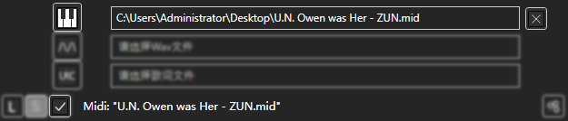
同上一个实例，选择Mid文件后，点击左下处"对勾"导入文件。
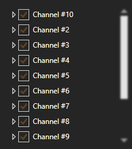
我们发现此Midi包含16个音轨，38种乐器，想要一一设置太耗费时间了。下图为Midi的预览：
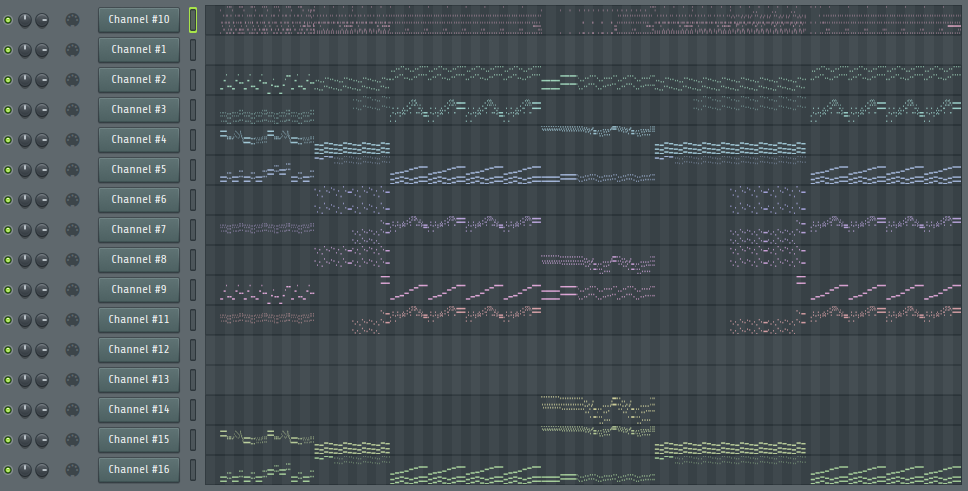
其实我们可以利用自动补全一键完成设定工作。
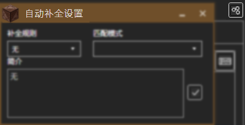
找到右侧的"齿轮"，打开自动补全设置。
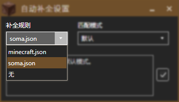
例如我们使用soma资源包制作红石音乐，选中"soma.json"的补全规则。
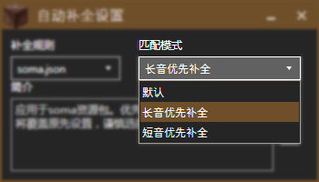
Midi中涉及到不少管弦乐器，我们使用"长音优先补全"模式，用于设定长音。
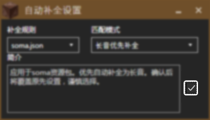
点击"对勾"确认。
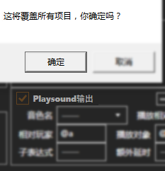
虽然补全了设置，但"Playsound输出"还没勾选。在全局设置中，我们勾选"Playsound输出"，然后点击右上角"对勾"确认，出现一个消息框提示我们是否确认修改，点击"确认"即可。
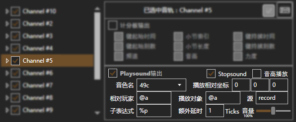
回到Midi设置中，所有项目的"Playsound输出"都被启用了，而且属性也都被自动补全了。
通过全局设置和自动补全，原来需要几十分钟的事情仅靠两个操作便完成了。
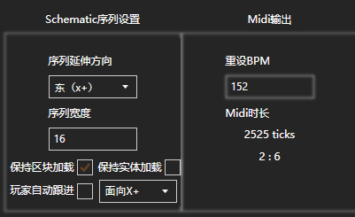
来到导出设置，我们可以设置序列延伸方向、序列宽度、保持区块加载、保持实体加载、自动跟进与双声道，还可以修改BPM。如图，我将双声道设置为"面向X+方向"。
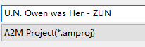
推荐保存工程，以方便修改。
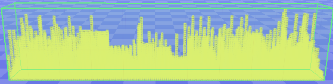
同上一个实例，导出适用于MCEdit的schematic文件，并将其导入到存档中。
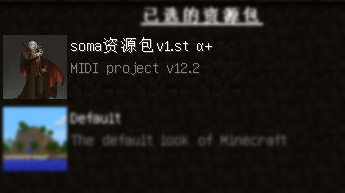
别忘了启用资源包。
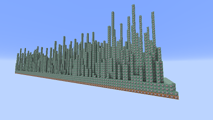
Enjoy。
使用"相对路径"导入即可。播放需要使用soma资源包。